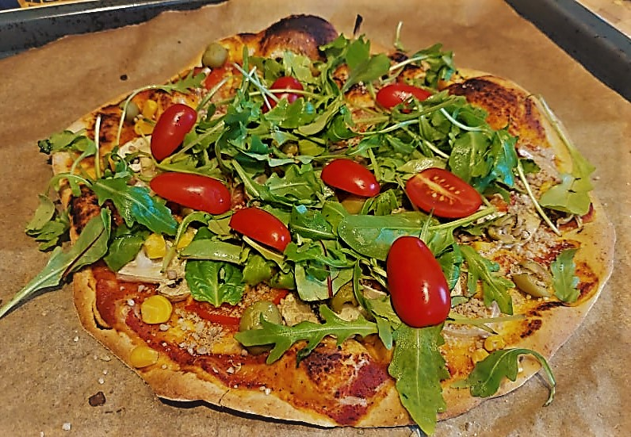

Pizza

Opis
Przepis na doskonałą wegańską pizzę na cienkim cieście.
Składniki
Składniki na ciasto:
- 200 g ciepłej wody
- łyżeczka cukru
- łyżeczka soli
- 20 g świeżych drożdzy
- 350 g mąki pszennej
Składniki na sos:
- 600 ml passaty pomidorowej
- 2 ząbki czosnku
- łyżeczka oregano
- pół łyżeczki soli
- 2 szczypty pieprzu
Dodatki:
- 2 garście rukoli
- 10 pomidorków koktajlowych
- 200 g pieczarek
- pół puszki kukurydzy
- słoik oliwek
- garść płatków drożdżowych
Sposób przygotowania:
- Zmieszać ze sobą składniki na ciasto.
- Wyrabiać ciasto przez ok. 10 min.
- Pozostawić ciasto w przykrytej misce, aż podwoi swoją objętość.
- Podsmaż na patelni czosnek.
- Dodaj passatę i resztę składników na sos i poczekaj, aż sos zgęstenieje.
Rozwałkuj ciasto i nałóż równomiernie przygotowany wcześniej sos.
- Rozłoż na pizzy oliwki, kukurydzę i pieczarki.
- Piecz w piekarniku przez 10 min w 250 stopniach.
- Na upieczonej pizzy rozłoż pomidorki, rukolę i posyp płatkami drożdzowymi.